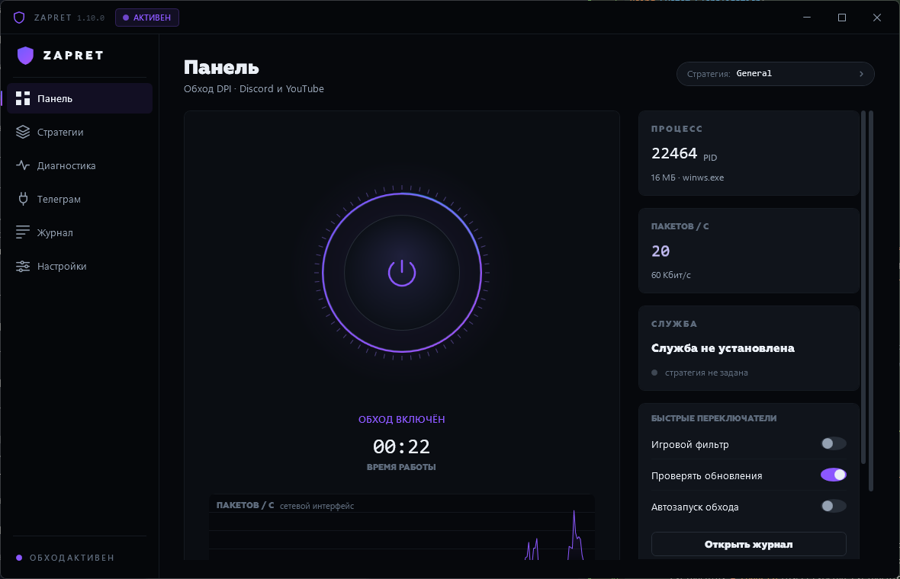
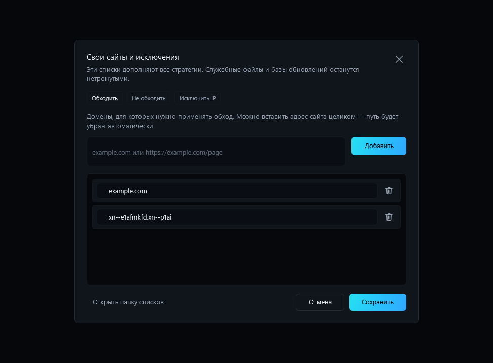

Неофициальный GUI для Flowseal · Windows 10/11
Управляйте zapret,
а не BAT‑файлами.
Что внутри
Не нужно помнить,
какой BAT‑файл сработал.
- Состояние zapret
- Смена стратегии без остановки
- Диагностика соединения
- Домены и исключения
Интерфейс
Главный экран.


Свои правила
Сайты и исключения.
- Домены и IP в отдельных вкладках
- Защита несохранённых изменений
- Сохранение данных при обновлении
Обновления
Обновляется,
не стирая ваши списки.
- 01Скачивает точный релиз
- 02Сверяет SHA-256
- 03Сохраняет ваши данные
- 04Проверяет запуск
Установка
Скачать Zapret
Control Center
Zapret Control Center 1.14.0
Windows x64 · Установщик EXE · 59,6 МБ
Последний проверенный релиз- 1Скачайте setup EXE
Он уже содержит программу, стратегии и необходимые файлы.
- 2Запустите установщик
Windows попросит подтвердить установку с правами администратора.
- 3Откройте ярлык
Zapret Control Center появится в меню «Пуск».
Вопросы
Перед установкой.
Это официальный проект Flowseal?
Нет. Это независимый community fork. Flowseal предоставляет исходные стратегии и скрипты, но не связан с Zapret Control Center и не одобрял GUI как официальную сборку.
Программа является VPN?
Нет. Она не меняет страну и внешний IP. Zapret модифицирует пакеты, чтобы оборудование DPI не распознало домен; маршрут остаётся у провайдера.
Что скачивать: установщик или portable ZIP?
Для обычной установки скачайте setup EXE: он содержит полную сборку, сам размещает файлы и создаёт ярлык. Portable ZIP нужен только для запуска без установки. Отдельный ZapretGUI.exe предназначен для ручного обновления уже существующей полной сборки.
Сработает ли обход у моего провайдера?
Гарантировать это нельзя: оборудование и правила фильтрации отличаются. Начните с рекомендованной стратегии, затем запустите автоподбор или попробуйте другие профили.
Почему антивирус может реагировать?
В сборке используется WinDivert — драйвер перехвата трафика. Некоторые антивирусы относят такие инструменты к RiskTool. Установщик пока не подписан Authenticode, поэтому SmartScreen может показать «Неизвестный издатель». Скачивайте файлы только из Releases этого форка и сверяйте SHA-256.
Мои списки сохранятся после обновления?
Да. Встроенное обновление и повторный запуск установщика не перезаписывают пользовательские списки и настройки. Перед заменой portable updater также создаёт резервную копию.
Что приложить к сообщению об ошибке?
В разделе «Диагностика» запустите проверку и соберите ZIP-отчёт. Просмотрите его перед публикацией, затем приложите к Issue вместе с версией GUI и шагами воспроизведения.